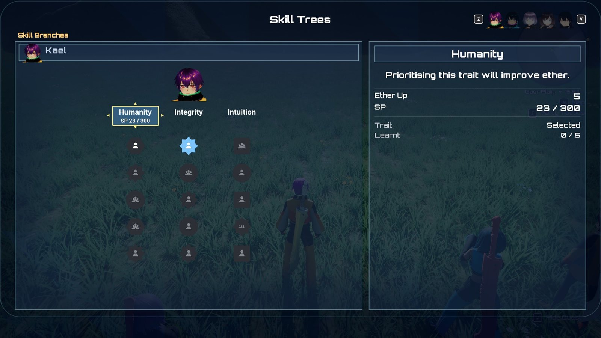

Skills¶
All · 20 min read · No code

A character's skill trees.
Skills are each character's passive upgrades. Every character has a skill tree of branches
(five in XC1), each holding five skills learnt strictly top to bottom. Characters earn skill points
(SP) from kills; the SP flows into the one branch the player has selected, and the selected
branch also grants that branch's trait, a stat bonus that grows as the branch fills. Progress is
owned by the same component that owns levels, Game/BP_XenoCore_Progression
(UXenoCoreProgressionComponent), and is stored per character, keyed by the
member definition. The one idea: a tree is a Data Table and
a save only ever stores counts. "Branch row X, 3 skills learnt, 240 SP into the fourth" is the
whole record, so you can rewrite, rename or rebalance skills without breaking saves, and every stat a
skill gives is re-derived from that record whenever anything changes.
At a glance
In play: the Skills screen (main menu › Skills) shows each character's branches; pick one, and the SP from every kill fills its skills top to bottom.
What you can change, no code:
- A character's tree, a new branch or a new skill: Add a skill or a skill tree
- SP costs, trait ladders and SP per kill: the three shared tables in
Battle/Skills - How fast SP comes in overall: Skill Point Reward Scale on
Game/BP_XenoCore_Progression - Every setting: What you can change
63 shipped skills are stand-ins
Every one of the 100 shipped skills, and every branch trait, does something. But 63 of the skills keep their Xenoblade Chronicles name, shape, colour, scope and cost while doing a different, simpler thing, because the system their original effect needs is not built yet (tension, visions, chain attacks, counters, equipment weight classes, gem crafting), or is built without the hook the skill needs (aggro modifiers on arts, Party Gauge fill and revive bonuses). Stand-in skills lists each one, what it does, and what it waits on.
How it fits together¶
| Piece | Asset or class | What it does |
|---|---|---|
| Skill tree | Battle/Skills/DT_XenoCore_SkillTree_*, rows of XenoCoreSkillBranchRow |
One row per branch. The row name is the branch's id; row order is the order the branches are drawn in. |
| The character's tree | Skill Tree on the character Blueprint (XenoCore › Skills) | Which table this character uses. Read from the class defaults, so a benched character (no body) still has one. |
| Cost curves | Battle/Skills/DT_XenoCore_SkillCostCurves |
SP to learn each of a branch's five skills. Two rows: Starting (300, 700, 1,000, 2,000, 3,500) and Quest (200, 500, 800, 1,000, 1,500). |
| Trait ladders | Battle/Skills/DT_XenoCore_SkillTraitLadders |
A trait's value at 0, 1 ... 5 skills learnt. Six rows, for example AgilityFlat 2, 5, 8, 10, 12, 15. |
| SP per kill | Battle/Skills/DT_XenoCore_SkillPointRewards |
Flat SP by level difference: Trivial 1, Easy 5, Even 10, Strong 15, Dangerous 20. |
| Stat carrier | Battle/Skills/GE_XenoCore_SkillStats |
One infinite effect per body that carries every stat skill and the trait, one channel per stat. |
| Skill abilities | Battle/Skills/Abilities/GA_XenoCore_Skill_* |
Behaviour for skills that react to something (battle start, a kill, an ally falling). Blueprint children of XenoCoreSkillAbility_TimedBuff. |
| Progression component | Game/BP_XenoCore_Progression |
Holds every character's record, awards SP, applies skills to bodies, answers "how big is this bonus?". |
| Skills screen | UserInterface/Skills/W_XenoCore_SkillsScreen (UXenoCoreSkillsScreenBase) |
The menu screen, opened from the Skills entry of the main menu. |
| Icon set | UserInterface/Skills/DA_XenoCore_SkillIconSet |
How every skill icon is drawn. No skill has its own icon art. |
The shipped trees and who uses them:
| Tree | Character (pawn) | Branches open at start |
|---|---|---|
DT_XenoCore_SkillTree_Shulk |
Kael (B_XenoCore_Party_VRoid_L) and Blue (Game/B_XenoCore_Player) |
3 of 5 |
DT_XenoCore_SkillTree_Reyn |
Mira (B_XenoCore_Party_VRoid_K) |
3 of 5 |
DT_XenoCore_SkillTree_Dunban |
Nia (B_XenoCore_Party_VRoid_S) |
3 of 5 |
DT_XenoCore_SkillTree_Fiora |
Dorran (B_XenoCore_Party_VRoid_C) |
3 of 5 |
DT_XenoCore_SkillTree_Arcanist |
Isolde (B_XenoCore_Party_VRoid_M) |
3 of 5 |
DT_XenoCore_SkillTree_Trickster |
Sabine (B_XenoCore_Party_VRoid_Q) |
3 of 5 |
DT_XenoCore_SkillTree_Medic |
Tamsin (B_XenoCore_Party_VRoid_Y) |
3 of 5 |
A tree can be shared: Kael and Blue point at the same table, but each has their own progress, because progress is keyed by the character, not by the table.
A branch¶
Each row of a tree table is one branch:
| Field | What it does |
|---|---|
| Display Name | The branch's name on the screen. |
| Trait Description | One line shown when the branch header is focused. |
| Trait Stat | A XenoCore.Stat.* tag: the stat the trait raises. Empty means the branch has no trait. |
| Trait Operation | Add (points, or percentage points for a rate) or Scale (a percentage of the stat). |
| Trait Ladder | A row of DT_XenoCore_SkillTraitLadders. |
| Cost Curve | A row of DT_XenoCore_SkillCostCurves. |
| Unlocked At Start | Open from the start. Otherwise a quest opens it. |
| First Skill Prelearned | The first skill starts learnt, at 0 SP. |
| Skills | Exactly five skills, top to bottom. |
A skill¶
Each of a branch's five Skills is one entry. A skill does its work in up to three ways, all optional and all driven by one number, Value:
| Field | What it does |
|---|---|
| Display Name, Description | Shown on the screen. The description may contain {Value}, which is replaced with the formatted value ("Reduces equipment weight by {Value}."). |
| Shape | The icon's frame: Circle, Square, Hexagon, Star or Diamond. Only the future Skill Links feature reads it (Diamond means "this character only"). |
| Timing | Always (blue icon) or In Battle Party (orange icon): the skill works only while its owner is an active member. |
| Scope | Self, Battle Party (every active member) or Whole Party (everyone, benched included). The icon's glyph. |
| Value | The skill's strength. What Stats add, what a Bonus is worth, what an Ability reads. |
| Duration | Seconds, for a skill with an Ability that applies a timed buff. |
| Stats | Stats raised by Value while the skill reaches the body. Each entry is a Stat tag and an Operation (Add or Scale). A skill can raise several. |
| Condition, Condition Threshold | When the Stats hold: Always, Health At Or Below or Health At Or Above a percentage of max HP, or No Armour (nothing in any armour slot; the weapon does not count). |
| Chance | Percent chance that an Ability's trigger fires. 100 is always. |
| Bonus | A XenoCore.SkillBonus.* tag another system asks about (see below). |
| Ability | A skill ability class, granted to the body while the skill reaches it. |
| SP Cost Override | −1 uses the branch's cost curve. Anything else replaces it for this skill. |
| Link Cost | Reserved for Skill Links, which are not built. Read by nothing. |
Lifecycle¶
Seeding. The first time anything asks about a character's skills, their record is filled in from the tree: every Unlocked At Start branch is opened, a First Skill Prelearned branch starts with one skill learnt, and the first unlocked row in table order becomes the selected branch. Seeding only ever adds: a branch you add to a table later appears for existing saves too, and progress on existing branches is never touched.
Earning SP. When an enemy dies, SP is awarded before the EXP:
- The party's level is worked out per Skill Point Level Basis: the active party's average (default), the leader's, the lowest active member's, or each character's own.
- The level difference (party level − enemy level) picks a band in the reward table. The first row whose range contains it wins.
- The band's SP × Skill Point Reward Scale × the enemy's Skill Point Multiplier is paid to
every roster member. Benched members get Reserve Skill Point Rate of it, which the
sample sets to
0, like the EXP rate, so a benched character earns nothing (XC1 pays 90%).
Quests do not pay SP. Anything else can, by calling Award Skill Points (see Extending it). After a kill, each party member's HUD plate shows the EXP, AP and SP they earned together.
Spending SP. SP flows into the character's selected branch only. It fills the next unlearnt skill; when the skill's cost is met, the skill is learnt and any remainder carries into the next. The icon on the Skills screen fills from the bottom as SP arrives. On each skill learnt:
- "Skill Learnt" floats over the character (if they have a body), and
XenoCore.Skills.Message.SkillLearntis broadcast carrying the Member, Branch (row name), Index (0 to 4) and Skill Name.
SP earned by a finished branch is thrown away
Once all five skills of the selected branch are learnt, any further SP for that character is
wasted. Nothing warns the player; the screen shows ---- / ---- against the branch. This is
deliberate, it is what makes choosing a branch a decision, but test it as a player would.
Selecting a branch. On the Skills screen, focus a branch header and press accept (Change
Trait), or click it. Switching is free and unlimited. Learnt skills stay active whichever branch
is selected; only the trait follows the selection. Selecting a locked or unknown branch is refused
with a warning in LogXenoSkills.
Unlocking a branch. A quest opens a branch when it is turned in, through its reward's Skill Branches list (Member plus Branch, the row name). Blueprint can do the same with Unlock Skill Branch. The party member sees a notice over their head (Branch Unlocked Text), and the Skills screen gains a column. The quest offer screen and the turn-in banner both list branch rewards.
Applying skills to a body. Whenever something changes, the progression component re-derives every body's skills from scratch:
- It removes the stat effect it applied last time.
- For every roster member whose skills reach this body, it adds up each learnt skill's Stats (checking Condition), plus the trait of this body's own selected branch.
- It applies one
GE_XenoCore_SkillStatscarrying the totals, one channel per stat. - It grants any skill Ability that newly reaches the body and removes any that no longer does. Abilities already granted are left running, so a buff counting down or a "once per battle" latch survives a refresh caused by something unrelated.
- It keeps HP as the same fraction of max HP, so a Max HP skill never quietly takes HP away.
This runs when a body spawns, when a skill is learnt, when a branch is selected, when the party changes, when equipment changes, after a level-up, and when a body's HP crosses a skill's condition threshold. Nothing about it is saved; it is always rebuilt from the record.
Who a skill reaches. A skill owned by one character applies to a body when:
- the owner is that body, or the skill's Scope is Battle Party and the body is an active member, or the Scope is Whole Party; and
- the skill's Timing is Always, or its owner is an active member.
So an orange (In Battle Party) party-wide skill buffs the active party only while its owner fights, and a blue (Always) whole-party skill works even from the bench. The same rule decides who a Bonus counts for.
Level-ups. A level-up re-applies the statline and then refreshes skills, because a Scale skill is a percentage of a stat that has just moved. A level-up still heals to full, including any extra max HP a skill adds.
How a skill takes effect¶
Stat skills and traits¶
Most skills are just Stats plus a Value. They arrive through GE_XenoCore_SkillStats, whose
twelve channels are the list of stats a skill can raise:
XenoCore.Stat.Strength, .Ether, .Agility, .PhysicalDefence, .EtherDefence,
.CriticalRate, .BlockRate, .Weight, .WeaponAttackMin, .WeaponAttackMax, .MaxHealth,
.MoveSpeed.
- Add adds Value as points. For Critical Rate and Block Rate the value is a whole percentage (15 means +15 %). Move Speed is a percentage over the character's authored walk speed.
- Scale adds Value percent of the stat as it stands without skills (statline plus equipment), so it grows with gear. Timed buffs up at that moment, such as Strength Up, are left out of the price.
- A negative Value lowers the stat (Weight −5). The screen labels it "Weight Down".
A skill naming a stat the effect has no channel for does nothing and logs a warning naming the skill.
Bonuses other systems ask for¶
A Bonus skill adds nothing to a character by itself. Instead, a system asks "what is this character's total bonus for this tag?" with Get Skill Bonus and applies it. The answer is the sum of the Value of every learnt skill with that tag that reaches the character, as a percentage. Shipped systems ask with these tags:
| Tag | Asked by | Effect |
|---|---|---|
XenoCore.SkillBonus.QuestExperience |
Quest turn-in | % more EXP from quests |
XenoCore.SkillBonus.BattleExperience |
Enemy kill | % more EXP from enemies |
XenoCore.SkillBonus.ArtPoints |
Enemy kill | % more Art Points from enemies |
XenoCore.SkillBonus.HealingPower |
Healing arts | % more HP restored by the caster |
XenoCore.SkillBonus.PhysicalDamageTaken |
Damage formula | % less physical damage taken |
XenoCore.SkillBonus.EtherDamageTaken |
Damage formula | % less ether damage taken |
XenoCore.SkillBonus.CriticalDamage |
Damage formula | % more damage on a critical hit |
XenoCore.SkillBonus.FirstStrike |
Damage formula | % more damage on the attacker's first hit of each battle |
Because the answer is read from the record, a bonus works for a benched character too.
Skills with behaviour¶
A skill that reacts ("when an ally falls", "at the start of a battle") names an Ability: a
Blueprint child of UXenoCoreGameplayAbility_Skill. It is passive: granted while the skill reaches
the body, active from the moment it is granted, removed when the skill stops reaching it. It can
read its own skill with Get Skill, Get Skill Value and Get Skill Duration.
The shipped behaviour skills all use one ready-made class, UXenoCoreSkillAbility_TimedBuff: when
this happens, apply that buff for the skill's Duration. A Blueprint child with two fields set is
a new skill; there is no graph.
| Setting (XenoCore › Skills) | What it does |
|---|---|
| Trigger | Ally Incapacitated (another active member goes down), Battle Start, Battle Start Vs Higher Level (the battle is against an engaged enemy at least Level Gap levels above), On Kill, On Miss (this body's attack is evaded), On Critical. |
| Buff | The status effect to apply, a GE_XenoCore_Status_*. |
| Additional Buffs | More statuses applied at the same time, with the same strength and duration. |
| Level Gap | For Battle Start Vs Higher Level. Default 3. |
| Battle Start Window | How long after the battle starts an engaged enemy still counts as "starting a battle against it". Default 1.5 s. |
The skill's Value is sent to the buff as its strength (a status that reads a percentage turns 20 into +20 %), its Duration as the buff's length, and its Chance is rolled each time the trigger fires. A battle-start trigger fires at most once per battle; a failed roll is that battle's answer. Because the buff is an ordinary status, it shows on the HUD and over the character like any art's buff.
The On Kill, On Miss and On Critical triggers listen for gameplay events on the
character: XenoCore.Event.Combat.Kill (sent by a dying enemy to whoever damaged it last),
XenoCore.Event.Combat.Miss and XenoCore.Event.Combat.Critical (sent by the damage formula).
Your own attacks must send the combat events
If you add an attack that does not use XenoCore's damage execution, on-miss and on-critical
skills never fire for it, and nothing reports it. Send XenoCore.Event.Combat.Miss or
.Critical to the attacker with Send Gameplay Event To Actor and they will.
Condition gates Stats only
Condition decides whether a skill's Stats hold. It does not gate a Bonus or an Ability. A skill with a condition and no stats does nothing more than an unconditional one; Data Validation warns about it.
Stand-in skills¶
All 100 shipped skills have an effect. Each character's tree mixes three kinds:
- Faithful skills (37) do what the original game's skill does.
- Stand-ins (63) keep the original skill's name, shape, colour, scope and SP cost, and use an effect that already works in XenoCore. Each is the nearest live effect in the spirit of the name: a taunt raises defence, a tension skill gives a combat buff at a similar moment, an equipment-class skill reduces Weight.
- Traits all work. Three branches whose original trait was counter rate (
_ReynImpatience,_DunbanBravery,_FioraRashness) raise Block Rate or Critical Rate instead, on the same ladder.
A stand-in is ordinary data. To give a slot the original effect once its system exists, or any effect of your own, edit the skill's entry in its tree table (see Changing a shipped tree).
Every stand-in (63)
| Tree | Branch · slot | Skill | What it does | XC1's effect | Waits on |
|---|---|---|---|---|---|
_Shulk |
Bravery 1 | Fate Evasion | EXP from enemies +10 % | EXP when a vision tag breaks | Visions |
_Shulk |
Bravery 2 | Hero's Privilege | AP from enemies +20 %, whole party | Trades 20 % more generous | a trade hook |
_Shulk |
Bravery 5 | Glorious Future | Strength Up 15 %, 30 s, at the start of a battle vs. a stronger enemy | Talent Gauge fills after a vision | Visions |
_Shulk |
Humanity 2 | Kind Encouragement | Healing arts +10 % | Encouraging heals | Encourage |
_Shulk |
Humanity 3 | Friendship Heals | Battle party healing arts +10 % | Party heals after a Chain Attack | Chain Attack |
_Shulk |
Humanity 4 | Cheer of a Friend | Battle party: Strength Up 20 %, 20 s, when an ally falls | Burst Affinity fills the Party Gauge | Party Gauge |
_Shulk |
Humanity 5 | Chain of Friendship | Critical rate +5 % | Chain link chance +15 % | Chain Attack |
_Shulk |
Integrity 1 | Medium Equipment | Weight −2 | Medium armour allowed | weight classes |
_Shulk |
Integrity 2 | Secret of Life | Battle party Max HP +5 % | Revived allies +10 % HP | Party Gauge revive |
_Shulk |
Integrity 5 | Ultimate Teamwork | Critical damage +25 % | Chain Attack damage +25 % | Chain Attack |
_Shulk |
Intuition 1 | Battle Cry | Battle party: Strength Up 15 %, 20 s, at battle start | Tension +20 at battle-start affinity | Tension |
_Shulk |
Intuition 4 | Fever Pitch | Quest EXP +10 %, whole party | Gem-crafting Fever | Gem crafting |
_Shulk |
Intuition 5 | Element of Surprise | First strike +30 % | Positional art bonuses improved | positional arts |
_Shulk |
Pessimism 1 | Fight the Future | Battle party: Phys. Def Up 20 %, 30 s, vs. a stronger enemy | Visions warn 4 s earlier | Visions |
_Shulk |
Pessimism 2 | Stealth Warrior | Agility +10 % | Arts draw 10 % less aggro | Aggro |
_Shulk |
Pessimism 3 | Epic Evasion | Agility +10 % at half HP or below | Burst Affinity after evading | Affinity |
_Shulk |
Pessimism 4 | Forced Mercy | Physical damage taken −10 % | Sheds 25 % more aggro when hit | Aggro |
_Shulk |
Pessimism 5 | Immunisation | Ether damage taken −10 % | Immune to stat-lowering debuffs | debuff immunity |
_Reyn |
Camaraderie 1 | Ties of Friendship | Block rate +5 % | Chain link +5 % | Chain Attack |
_Reyn |
Camaraderie 2 | Shoulder to Shoulder | Battle party Max HP +5 % | Party heals 10 % after a Chain Attack | Chain Attack |
_Reyn |
Camaraderie 3 | Flying Start | Battle party Haste 15 %, 30 s, at battle start — only the affinity condition is dropped | Battle party Haste 15 %, 30 s at battle-start affinity | Affinity |
_Reyn |
Camaraderie 5 | Friends Forever | EXP from enemies +10 % | Affinity +30 on encourage | Affinity |
_Reyn |
Enthusiasm 1 | Heavy Equipment | Weight −4 | Heavy armour allowed | weight classes |
_Reyn |
Enthusiasm 2 | Courageous Taunt | Physical defence +10 % | Taunt arts +10 % | Aggro |
_Reyn |
Enthusiasm 3 | Healing Inspiration | Healing arts +10 % | Encouraged ally heals 10 % | Encourage |
_Reyn |
Enthusiasm 5 | Heroic Taunt | Physical damage taken −15 % | Taunt arts +15 % | Aggro |
_Reyn |
Impatience 1 | Ultimate Taunt | Phys. & Ether defence +10 % | Non-targeted taunt arts +20 % | Aggro |
_Reyn |
Impatience 3 | Rampage | Strength Up 20 %, 30 s, on a kill | Double-attack rate +10 % | Counters / double attacks (parked) |
_Reyn |
Impatience 5 | Channelled Pain | Strength +15 % at half HP or below | Talent Gauge when hurt | an on-damage talent hook |
_Reyn |
Spirit 1 | Medium Equipment | Weight −2 | Medium armour allowed | weight classes |
_Reyn |
Spirit 3 | Unrelenting Spirit | Phys. Def Up 20 %, 30 s, when an ally falls | No low tension when an ally falls | Tension |
_Reyn |
Spirit 4 | Feel the Heat | Agility +10 % at 75 % HP or below | Tension +5 when hurt | Tension |
_Dunban |
Bravery 1 | Medium Equipment | Weight −2 | Medium armour allowed | weight classes |
_Dunban |
Bravery 3 | Warrior's Ambition | Battle party Agility Up 15 %, 20 s, at battle start | Tension +25 at battle-start affinity | Tension |
_Dunban |
Bravery 4 | Overwhelming | Strength +10 % | More aggro from damage dealt | Aggro |
_Dunban |
Enthusiasm 2 | Counter Rage | Critical rate +5 % | Counter rate +10 % | Counters (parked) |
_Dunban |
Enthusiasm 3 | Ardent Strike | Strength Up 10 %, 10 s, on a crit | Tension +10 on a crit | Tension |
_Dunban |
Enthusiasm 4 | Deadly Determination | Agility Up 15 %, 20 s, on a kill | Tension +10 on an art | Tension |
_Dunban |
Enthusiasm 5 | Blazing Aura | Battle party Strength +5 % | Party Gauge on aura use | Party Gauge + auras |
_Dunban |
Obstinance 3 | Heavy Equipment | Weight −4 | Heavy armour allowed | weight classes |
_Dunban |
Obstinance 5 | Solid Foundation | Physical defence +15 % | Blow-down immunity | knockback / Topple resist |
_Dunban |
Prudence 1 | Sustained Spirit | Haste 10 %, 20 s, at battle start | Auras last +10 s | Auras |
_Dunban |
Prudence 2 | Steel Protection | Ether damage taken −10 % | Spike damage −20 % | Spikes |
_Dunban |
Prudence 3 | Mind of the Warrior | Battle party Agility +5 % | Party Gauge kept between fights | Party Gauge |
_Dunban |
Prudence 4 | Lightweight Expert | Phys. & Ether defence +10 % | Light armour's defences +15 % | weight classes |
_Dunban |
Prudence 5 | Critical Drain | Haste 15 %, 10 s, on a crit | Heal 2 % max HP on a crit | an on-crit heal |
_Dunban |
Wisdom 1 | Spiritual Awakening | Strength +15 % with no armour | More aggro with no armour | Aggro |
_Dunban |
Wisdom 3 | Twin Swords | Critical rate +5 % | Double-attack rate +5 % | Double attacks (parked) |
_Fiora |
Courage 1 | Mechonis Equipment | Weight −3 | Mechonis gear allowed | weight classes |
_Fiora |
Courage 2 | Desperate Daggers | Critical rate +15 % at half HP or below | Counter rate +15 % at half HP | Counters (parked) |
_Fiora |
Courage 3 | Second Wind | Battle party Haste 20 %, 20 s, when an ally falls | Revived allies +20 % HP | Party Gauge revive |
_Fiora |
Courage 5 | Unwavering Courage | Battle party Phys. Def Up 30 %, 30 s, when an ally falls | Party Gauge +50 with two allies down | Party Gauge |
_Fiora |
Innocence 1 | Maiden's Power | Critical damage +20 % | Chain damage +50 % with Shulk | Chain Attack |
_Fiora |
Innocence 2 | Maiden's Courage | Strength Up 30 %, 20 s, vs. a stronger enemy | Attack arts +50 % when Shulk warns | Visions |
_Fiora |
Innocence 3 | Maiden's Blessing | Physical damage taken −10 % | 10 % chance to heal on hit, with Shulk | Damage Heal |
_Fiora |
Innocence 4 | Maiden's Zeal | Ether damage taken −10 % | Cancels very low tension, with Shulk | Tension |
_Fiora |
Innocence 5 | Maiden's Miracle | All Stats Up 25 %, 20 s, when an ally falls | All Stats Up 25 %, 20 s when Shulk encourages | Encourage |
_Fiora |
Rashness 1 | Vision Mode | Strength Up 25 %, 20 s, on a kill | Attack arts +25 % when warned | Visions |
_Fiora |
Rashness 2 | Ultimate Counter | Critical rate +10 % | Counters always crit | Counters (parked) |
_Fiora |
Rashness 3 | Vital Force | Agility +20 % at 25 % HP or below | 2 % chance of a full Talent Gauge when hurt | an on-damage talent hook |
_Fiora |
Rashness 4 | Critical Combo | Haste 20 %, 10 s, on a crit | Double attacks always crit | Double attacks (parked) |
_Fiora |
Rashness 5 | Explosion of Energy | Haste 20 %, 20 s, at battle start | Tension +1 level on talent arts | Tension |
_Fiora |
Zeal 5 | Strong Links | Battle party Haste 20 %, 15 s, at battle start — only the affinity condition is dropped | Battle party Haste 20 %, 15 s at Burst Affinity | Affinity |
The pre-learnt first skills are stand-ins
Each character's free first skill is an equipment-class skill (Medium or Mechonis Equipment). Until equipment weight classes exist, it reduces Weight, so every character starts with a learnt skill that works. Weight is subtracted from Agility when hits are rolled, so less of it means better evasion and accuracy (see Stats and damage).
The Skills screen¶
The screen is opened by the main menu's Skills entry (Open Skills Screen). It shows one character at a time, starting with whoever you are controlling:
- L / R step through the whole roster, benched members included, with a strip of portraits.
- The card shows the character's portrait over one column per unlocked branch, in table row order; locked branches are left out, not greyed. Each column is a header over five icons.
- An icon is composed from the skill's data: Shape is the frame, Timing the colour (blue Always, orange In Battle Party), Scope the glyph (one figure, three figures, ALL). An unlearnt skill is a dark silhouette; the one being learnt fills from the bottom.
- The selected branch's header is drawn in the button style's Selected state (the same blue as every selected row in the project) and shows a second line, SP 200 / 700, or Complete. That line is the character's SP: there is no SP balance, only progress into the next skill.
- The cursor is XC1's: a yellow frame with an arrow on each side, the same on a branch header and on a skill icon, so it never looks like the selection. Its colour and sizes are Cursor Colour, Cursor Frame Width, Cursor Arrow Size and Cursor Arrow Gap on the header and icon classes.
- Focusing a branch header shows its trait, the trait's current value, Selected or Not
selected, skills learnt, and SP
into / costfor the next skill (or---- / ----when the branch is complete). - Focusing a skill shows its stat and value, SP cost or Learnt, Active (Always / In battle party), Affects (Self / Battle party / Whole party) and Effect Time if it has a duration.
- Change Trait appears on the action bar only while the cursor is on a branch that is not already selected.
The screen derives from UXenoCoreCharacterMenuScreenBase, a shared base for any menu screen
about one character. The Arts screen uses the same base. It owns roster cycling (benched
included), the portrait strip, the bumper glyphs, an optional pair of tab triggers (ZL / ZR), and
Menu input mode. A screen built on it overrides On Member Shown to paint, and always reads
records by member definition, never from a pawn, because the shown character may be benched.
What you can change¶
| Setting | Where it lives | What it does |
|---|---|---|
| Skill Tree | Character Blueprint › XenoCore › Skills | The character's tree. Empty means no skills; the screen shows "No skill tree". |
| Skill Point Reward Table | BP_XenoCore_Progression › XenoCore › Skills |
SP bands per kill. |
| Skill Point Reward Scale | BP_XenoCore_Progression › XenoCore › Skills |
One multiplier over all kill SP. 1.0 by default; raise it for a shorter game instead of editing the bands. |
| Reserve Skill Point Rate | BP_XenoCore_Progression › XenoCore › Skills |
Benched members' share of kill SP: 0 in the sample (the C++ default is XC1's 0.9). A separate setting from the EXP rate, so the two can differ. |
| Skill Point Level Basis | BP_XenoCore_Progression › XenoCore › Skills |
Whose level sets the band: Party Average (default), Leader, Lowest, Own. |
| Skill Stats Effect | BP_XenoCore_Progression › XenoCore › Skills |
The stat carrier, GE_XenoCore_SkillStats. |
| Skill Learnt Text, Branch Unlocked Text, Skill Learnt Colour, Skill Feedback Scale | BP_XenoCore_Progression › XenoCore › Skills › Feedback |
The line floated over a character. Empty text turns it off. |
| Skill Point Multiplier | Enemy Blueprint or placed enemy › XenoCore › Enemy | Scales the SP this enemy pays. 1.0. |
| Skill Branches | Quest definition › Reward | Branches the quest opens on turn-in. |
| Costs, ladders, bands | DT_XenoCore_SkillCostCurves, _SkillTraitLadders, _SkillPointRewards |
Shared by every branch that points at them. |
| Icon Set, Icon Class, Header Class, Header Style, Accept Action, Show Skill Links Tab, sizes and colours | W_XenoCore_SkillsScreen class defaults › XenoCore › Skills |
The screen. Header Style is the branch headers' button style, ButtonStyle_XenoCore_Menu; restyle that asset and the headers follow. Empty falls back to the header's own plate colours. Leave Show Skill Links Tab off; Skill Links are not built. |
| Portrait Size, Unselected Portrait Opacity, Max Visible Portraits, the four actions | W_XenoCore_SkillsScreen class defaults › XenoCore › Menu |
The character strip and bumpers, from the shared base. |
| Shape Textures, Glyph Textures, Always Colour, In Battle Party Colour, Unlearnt Colour | DA_XenoCore_SkillIconSet |
Every icon. Restyling all skills is a texture swap here. |
Every table checks itself when saved or validated. You get a Data Validation error for a branch without exactly five skills, a branch with no Cost Curve, a trait stat with no Trait Ladder, a skill with no name or a Stats entry with no stat, a cost curve without five costs, a ladder without six values, or an SP band whose minimum is above its maximum. You get a warning for a skill with no Stats, Bonus or Ability (it does nothing) and for a Condition on a skill with no Stats.
The row name is the save's id
A save stores branches by row name. Renaming a branch row after players have saves resets that branch for them: the old progress is kept under the old name and never shown, and the new row starts fresh. Nothing is logged. Choose final row names before release, and change Display Name instead.
Reordering skills changes what a save has learnt
A save stores how many skills of a branch are learnt, not which. Swap skills 2 and 4 and every save with three learnt now has the old skill 4 instead of skill 2. That is how skills stay editable, so reorder only before release, or accept the change.
Save¶
On load, each record is re-seeded from the current table (additively), so new branches appear. If the saved selected branch no longer exists or is locked, the first unlocked row is selected instead. Skill effects are never saved; they are rebuilt when the bodies spawn. See Save and front end.
For programmers: the saved fields
Each member's saved record carries:
| Field | Meaning |
|---|---|
bSkillsSaved |
False for a save made before skills existed; that character is seeded fresh on load. |
SelectedSkillBranch |
Row name of the selected branch. |
SkillBranches |
One entry per branch: Branch (row name), bUnlocked, SkillsLearnt (0–5), SkillPointsIntoNext. |
Console commands¶
| Command | Effect |
|---|---|
XenoGiveSP 2000 |
Pour SP into the leader's selected branch, then print the tree. SP past a complete branch is wasted, as in play. |
XenoSkills |
Print the leader's tree, selected branch, and each branch's state, learnt count and SP into the next skill. |
Both are cheat-manager commands, so they work in PIE and development builds. Output is under the
LogXenoSkills log category; skill abilities log under LogXenoSkillAbility.
Extending it¶
- Give a character a tree, or add skills: see Add a skill or a skill tree.
- Award SP from anything else (a landmark, a cutscene): call Award Skill Points on Get Party Progression with the member and amount. Tick Apply Reserve Rate to pay benched members the reserve share.
- Open a branch from script: Unlock Skill Branch (Member, Branch row name). Safe to call twice.
- Make your own system skill-aware: add a tag under
XenoCore.SkillBonusin your own gameplay tag config, set it as a skill's Bonus, and in your system call Get Skill Bonus (member) or Get Skill Bonus For Actor (a body; returns 0 for anything that is not a party member). No skill code changes. - Let skills raise a new stat: add a modifier to
GE_XenoCore_SkillStatsfor the attribute, with magnitude Set By Caller and yourXenoCore.Stat.*tag as its data tag (copy an existing channel). The channel list is the effect's modifier list, and the screen labels it from the tag. This edits a shipped asset; note it for template updates.
A new percentage stat added as a channel is 100 times too strong
The conversion from a whole percentage in the data to a 0–1 fraction on the attribute is
applied only to Critical Rate and Block Rate. If you add a channel for another attribute
stored as a 0–1 fraction, a skill's +15 lands as +15.0, which usually clamps to 100 %. Store
such a stat as a whole percentage, or ask a programmer to add it to the conversion in
XenoCoreProgressionComponent_Skills.cpp (AddStat).
- Behaviour that TimedBuff cannot express: create a Blueprint child of
XenoCoreGameplayAbility_Skill. Set Evaluate Interval to poll and override On Evaluate, or listen for gameplay events in Activate Ability. Use Apply Buff To Self to apply a status with the skill's value and duration. Keep the base empty: no tags or effects of its own. - React to a skill being learnt: listen for
XenoCore.Skills.Message.SkillLearnt. Refresh anything that shows SP or skill counts onXenoCore.Progression.Message.Changed, which is sent on every SP award and branch change. See Events you can listen to. - A new menu screen about one character (programmers): subclass
UXenoCoreCharacterMenuScreenBasein C++ and override On Member Shown, Reset For Show and, if the screen has tabs, the tab handlers. - Never edit
DT_XenoCore_SkillPointRewards' bands to make a demo faster; change Skill Point Reward Scale instead, so the reference numbers stay intact.
Why it's built this way¶
For programmers: the design reasons
- Data Tables, not one data asset per skill, because a designer sees a whole character in one asset, tables round-trip CSV and JSON in the editor, and they can be filled from script. The trade is that a row cannot hold a Blueprint graph, which is why behaviour lives in a separate ability class the row points at, the same "data pointing at behaviour" split as an art definition and its ability.
- Saves store counts, never skill ids, because skills are learnt strictly in order. Designers can rename, rewrite and rebalance skills freely.
- One stat effect per body, rebuilt from scratch, following
GE_XenoCore_EquipmentStats: no stat name is hard-coded, the effect's channels are the list, and "remove, sum, re-apply" cannot drift the way incremental adds and removes would. It is additive on top of the statline, never an override, so it survives a level-up re-stat. - Bonuses are asked for, not pushed, so the damage formula, the quest turn-in and the healing art each read one number when they need it, a benched character's bonus works without a body, and a new bonus is a new tag rather than new skill code.
- Skill abilities are diffed, not re-granted, so a refresh caused by an SP award or a gear change never restarts a buff that is counting down.
- The record lives on the progression component, beside levels and Art Points, for the same reason those are there: progress is per character and half the roster has no body at any moment. No new component was added.
- The Skills screen and Arts screen share a base because they were the second and first screens of the kind; the base holds only what both need.